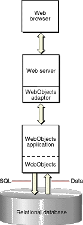

WebObjects
Architecture
When you run a WebObjects application, it communicates with
the Web browser through the chain of processes shown in Figure 4-3.
Figure
4-3 WebObjects HTML-based application
communication chain

Here is a brief description of these processes:
- A
Web browser. WebObjects supports all Web browsers that
conform to HTML 3.2. Of course, if your application uses more advanced
features like JavaScript or QuickTime, the users' browsers must
support these features.
- A Web server. WebObjects supports any
HTTP server that uses the Common Gateway Interface (CGI), the Netscape
Server API (NSAPI), the Internet Server API (ISAPI), or the Apache
module API. Although necessary for deployment, you don't actually
need a Web server while you develop your WebObjects applications.
- A WebObjects adaptor. A WebObjects
adaptor connects WebObjects applications to the Web by acting as
an intermediary between Web applications and HTTP servers. Note
that the WebObjects adaptor may not be a separate process but plug-in
to the Web server.
- A WebObjects application process. The
application process receives incoming requests and responds to them,
usually by returning a dynamically generated HTML page. You can
run multiple instances of this process if one instance is insufficient
to handle the application load. The application process is made
up of your code and the WebObjects frameworks.
© 2001 Apple Computer, Inc.